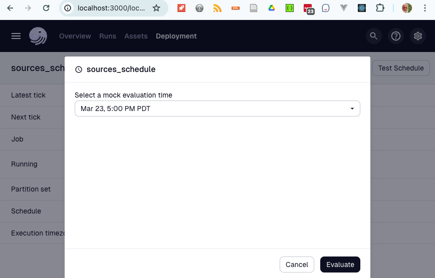
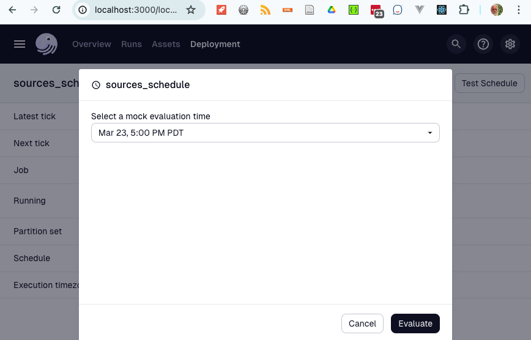

Scheduler, AKA Dagster
About
The following is a description of the steps and requirements for building and deploying the docker based workflow implemented in dagster.
Overview
The image following provides a broad overview of the elements that are loaded in to the Docker orchestration environment. This is a very basic view and doesn't present any scaling or fail over elements.
The key elements are:
- sources to configuration to load into the Gleaner and Nabu tools, and push to the triplestore. These are now stored in an s3 location
- gleaner configuration. a list of sources to load. (NOTE: This is also a docker config that needs to be updated to mactch to make things work)
- tenant configuration. a list communities, and which sources they load
- The Dagster set which loads three containers to support workflow operations
- The Gleaner Architecture images which loads three or more containers to support
- s3 object storage
- graph database (triplestore)
- headless chrome for page rendering to support dynamically inserted JSON-LD
- any other support packages like text, semantic or spatial indexes
WORKFLOWS
There are three workflows * ingest works to load sources * tasks weekly task * ecrr - loads Earthcube Resource Registry
basic deployment
- information for environment variables is created
- The configuration files are created and loaded to s3, and docker/config
- a docker stack is created, and the environment variables are added.
- portainer deploys containers
- when ingest and tasks are executed, they read
Ingest Workflow
Task workflows
Steps to build and deploy
The deployment can be tested locally. You can setup a services stack in docker to locally test, or use existing services.
The production 'containers' dagster, gleaner, and nabu are built with a github action. You can also use a makefile.
This describes the local and container deployment We use portainer to manage our docker deployments.
Server Deployment.
Production example for Earthcube
DEVELOPER Pycharm -- Run local with remote services
You can test components in pycharm. Run configurations for pycgharm are in runConfigurations (TODO: Instructions)
use the ENVFIle plugin.
 1) move to the implnets/deployment directory
2) copy the envFile.env to .env see use the ENVFIle plugin.
3) edit the entries to point at a portainer/traefik with running services
4) edit configuration files in implnets/configs/PROJECT: gleanerconfig.yaml, tenant.yaml
5) upload configuration implnets/configs/PROJECT to s3 scheduler/configs: gleanerconfig.yaml, tenant.yaml
4) run a Pycharm runconfig
5) eg dagster_ingest_debug
4) go to http://localhost:3000/
6) you can test the schedules
1) move to the implnets/deployment directory
2) copy the envFile.env to .env see use the ENVFIle plugin.
3) edit the entries to point at a portainer/traefik with running services
4) edit configuration files in implnets/configs/PROJECT: gleanerconfig.yaml, tenant.yaml
5) upload configuration implnets/configs/PROJECT to s3 scheduler/configs: gleanerconfig.yaml, tenant.yaml
4) run a Pycharm runconfig
5) eg dagster_ingest_debug
4) go to http://localhost:3000/
6) you can test the schedules
full stack test Run local with remote services
1) move to the implnets/deployment directory
2) copy the envFile.env to .env seeuse the ENVFIle plugin. see use the ENVFIle plugin.
3) edit the entries.
4) edit configuration files in implnets/configs/PROJECT to s3: gleanerconfig.yaml, tenant.yaml
5) upload configuration implnets/configs/PROJECT to scheduler/configs s3: gleanerconfig.yaml, tenant.yaml
4) for local, ./dagster_localrun.sh
5) go to http://localhost:3000/
To deploy in portainer, use the deployment/compose_project.yaml docker stack.
docker compose Configuration:
there are configuration files that are needed. They are installed in two places: * as docker configs * as scheduler configs in S3
(NOTE: I think the configs are still needed in the containers)
| file | local | note | |
|---|---|---|---|
| workspace | configs/PROJECT/worksapce.yaml | dockerconfig: workspace | docker compose: used by dagster |
| gleanerconfig.yaml | configs/PROJECT/gleanerconfig.yaml | s3:{bucket}/scheduler/configs/gleanerconfigs.yaml | ingest workflow needs to be in minio/s3 |
| tenant.yaml | configs/PROJECT/tenant.yaml | s3:{bucket}/scheduler/configs/tenant.yaml | ingest workflow needs to be in minio/s3 |
| dagster.yaml | dagster/implnets/deployment/dagster.yaml | dockerconfig: dagster | docker compose: used by dagster |
| gleanerconfig.yaml | configs/PROJECT/gleanerconfig.yaml | dockerconfig: gleaner | mounted in gleaner docker container |
| nabuconfig.yaml | configs/PROJECT/nabuconfig.yaml | dockerconfig: nabu | mounted in gleaner docker container |
(NOTE: This is also a gleaner config (below in runtime configuration) that needs to be updated to mactch to make things work)
Docker Configs for gleanerio containers are still needed:
| file | local | stack | note |
|---|---|---|---|
| gleanerconfig.yaml | configs/PROJECT/gleanerconfigs.yaml | env () | generated code needs to be in ~~portainer~~ |
| nabuconfig.yaml | configs/PROJECT/nabuconfigs.yaml | env () | generated codeneeds to be in ~~portainer~~ |
3) when the containers are running in a stack, on portainer, there will need to be updated by pulling from dockerhub. The ENV variables may need to be updated for the CONTAINER*_TAG
Runtime configuration
upload to an s3 bucket
| file | local | note | |
|---|---|---|---|
| gleanerconfig.yaml | s3:{bucket}/scheduler/configs/gleanerconfigs.yaml | ingest workflow needs to be in minio/s3 | |
| tenant.yaml | s3:{bucket}/scheduler/configs/enant.yaml | ingest workflow needs to be in minio/s3 |
updating config
You can update a config, and a sensor should pick up the changes.
1) Upload changed file to s3
2) note, if this is a new source, you need to add it to the docker config (gleaner-PROJECT).
2) go to overview,  3) go to s3_config_source_sensor for gleanerconfig.yaml changes, and s3_config_tenant_sensor for tenant.yaml changes
3) go to s3_config_source_sensor for gleanerconfig.yaml changes, and s3_config_tenant_sensor for tenant.yaml changes
 .
4) at some point, a run should occur. .
5) then go to the sources_sensor, or tenant sensor
if job does not run, you can do a backfill.
.
4) at some point, a run should occur. .
5) then go to the sources_sensor, or tenant sensor
if job does not run, you can do a backfill.
new sources:
6) so to job tab, and run summon_and_release with the 'partitions' aka 'sources' that are recent. 7) click materialize_all, and in the backfill dialog be sure only the added partition is selected. . 8) go to runs, and see that a job with a partition with that name is queued/running 9) run tenant_release_job with same partition name to load data to tenants
new tenants:
There are two jobs that need to run to move data to a tenant. (third will be needed for UI) 6) so to job tab, and run tenant_namespaces_job with the 'partitions' aka 'tenant' that are recent.' 7) click materialize_all, and be sure only the added partition is selected 8) go to runs, and see that a job with a partition with that name is queded,/running 6) so to job tab, and run tenant_release_job with the 'partitions' aka 'sources' for that tenant 7) click materialize_all, The data will be pushed to all tenant namespaces
test schedules

 

Environment files
1) cp deployment/envFile.env .env
2) edit
3) export $(cat .env | xargs)
export $(cat .env | xargs)
######
# Nabu and Gleaner configs need to be in docker configs
## docker config name GLEANER_GLEANER_DOCKER_CONFIG
## docker config name GLEANER_NABU_DOCKER_CONFIG
# suggested DOCKER_CONFIG NAMING PATTERN (nabu||gleaner)-{PROJECT}
########
GLEANERIO_DOCKER_GLEANER_CONFIG=gleaner-eco
GLEANERIO_DOCKER_NABU_CONFIG=nabu-eco
# ###
# workspace for dagster
####
GLEANERIO_WORKSPACE_CONFIG_PATH=/usr/src/app/workspace.yaml
GLEANERIO_DOCKER_WORKSPACE_CONFIG=workspace-eco
DEBUG_CONTAINER=false
#### HOST
# host base name for treafik. fixed to localhost:3000 when using compose_local.
HOST=localhost
# Applies only to compose_project.yaml runs
# modify SCHED_HOSTNAME is you want to run more than one instance
# aka two different project havests for now.
SCHED_HOSTNAME=sched
GLEANERIO_DOCKER_CONTAINER_WAIT_TIMEOUT=300
# debugging set to 10 - 30 seconds
PROJECT=eco
#PROJECT=iow
#PROJECT=oih
# tags for docker compose
CONTAINER_CODE_TAG=latest
CONTAINER_DAGSTER_TAG=latest
PROTOCOL_BUFFERS_PYTHON_IMPLEMENTATION=python
# port is required: https://portainer.{HOST}:443/api/endpoints/2/docker/
GLEANERIO_DOCKER_URL=https://portainer.{HOST}:443/api/endpoints/2/docker/
GLEANERIO_PORTAINER_APIKEY=
# if running dagster-dev, then this needs to be set ,
# defaults to "/scheduler/gleanerconfig.yaml" which is path to config mounted in containers
# when debugging generated code "../../../configs/eco/gleanerconfig.yaml"
# when debugging code in workflows "../../configs/eco/gleanerconfig.yaml"
GLEANERIO_DAGSTER_CONFIG_PATH=../../../configs/eco/gleanerconfig.yaml
# Network
GLEANERIO_DOCKER_HEADLESS_NETWORK=headless_gleanerio
### GLEANER/NABU Dockers
GLEANERIO_GLEANER_IMAGE=nsfearthcube/gleaner:dev_ec
GLEANERIO_NABU_IMAGE=nsfearthcube/nabu:dev_eco
##
# path where configs are deployed/mounted
####
GLEANERIO_GLEANER_CONFIG_PATH=/gleaner/gleanerconfig.yaml
GLEANERIO_NABU_CONFIG_PATH=/nabu/nabuconfig.yaml
###
#path in s3 for docker log files
GLEANERIO_LOG_PREFIX=scheduler/logs/
GLEANERIO_MINIO_ADDRESS=
GLEANERIO_MINIO_PORT=80
GLEANERIO_MINIO_USE_SSL=false
GLEANERIO_MINIO_BUCKET=
GLEANERIO_MINIO_ACCESS_KEY=
GLEANERIO_MINIO_SECRET_KEY=
GLEANERIO_HEADLESS_ENDPOINT=http://headless:9222
# just the base address, no namespace https://graph.geocodes-aws-dev.earthcube.org/blazegraph
GLEANERIO_GRAPH_URL=https://graph.geocodes-aws.earthcube.org/blazegraph
GLEANERIO_GRAPH_NAMESPACE=mytest
# optional: GLEANERIO_GRAPH_SUMMARY_ENDPOINT defaults to GLEANERIO_GRAPH_URL
#GLEANERIO_GRAPH_SUMMARY_ENDPOINT=https://graph.geocodes-aws-dev.earthcube.org/blazegraph
GLEANERIO_GRAPH_SUMMARY_NAMESPACE=mytest_summary
GLEANERIO_GRAPH_SUMMARIZE=True
# where are the gleaner and tennant configurations
GLEANERIO_CONFIG_PATH="scheduler/configs/"
GLEANERIO_TENANT_FILENAME="tenant.yaml"
GLEANERIO_SOURCES_FILENAME="gleanerconfig.yaml"
# ECO Custom variables for ecrr
ECRR_GRAPH_NAMESPACE=ecrr
ECRR_MINIO_BUCKET=ecrr
# only a public slack channel works. DV has no permissions to create a new channel
#SLACK_CHANNEL="#production_discussion"
SLACK_CHANNEL="#twitterfeed"
SLACK_TOKEN=
Appendix
Portainer API setup
You will need to setup Portainer to allow for an API call. To do this look at the documentation for Accessing the Portainer API
Notes
Handle Multiple Organizations
thoughts...
- Each organization can be in a container with its own code workflow.
- in the workflows directory:
dagster project projectname - If we can standardize the loading and transforming workflows as much as possible, then the graph loading workflows should be standardized. We could just define an additional container in a compose file, and add that to the workflows
load_from:
# - python_file:
# relative_path: "project/eco/repositories/repository.py"
# location_name: project
# working_directory: "./project/eco/"
# - python_file:
# relative_path: "workflows/ecrr/repositories/repository.py"
# working_directory: "./workflows/ecrr/"
# module starting out with the definitions api
# - python_module: "workflows.tasks.tasks"
- grpc_server:
host: dagster-code-tasks
port: 4000
location_name: "tasks"
- grpc_server:
host: dagster-code-eco-ingest
port: 4000
location_name: "ingest"
- grpc_server:
host: dagster-code-ios-ingest
port: 4000
location_name: "ingest"
- grpc_server:
host: dagster-code-eco-ecrr
port: 4000
location_name: "ecrr"- to add a container, you need to edit the workflows.yaml in an organizations configuration
Cron Notes
A useful on-line tool: https://crontab.cronhub.io/
0 3 * * * is at 3 AM each day
0 3,5 * * * at 3 and 5 am each day
0 3 * * 0 at 3 am on Sunday
0 3 5 * * At 03:00 AM, on day 5 of the month
0 3 5,19 * * At 03:00 AM, on day 5 and 19 of the month
0 3 1/4 * * At 03:00 AM, every 4 daysIndexing Approaches
The following approaches
- Divide up the sources by sitemap and sitegraph
- Also divide by production and queue sources
The above will result in at most 4 initial sets.
We can then use the docker approach
./gleanerDocker.sh -cfg /gleaner/wd/rundir/oih_queue.yaml --source cioosatlanticto run indexes on specific sources in these configuration files.